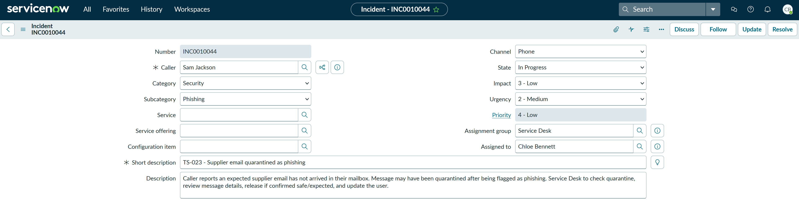
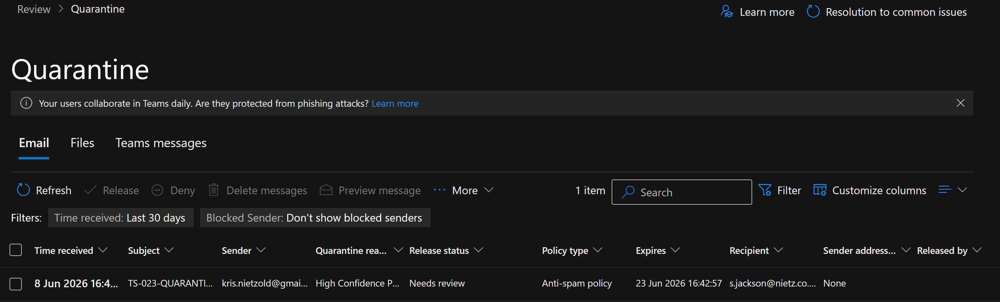
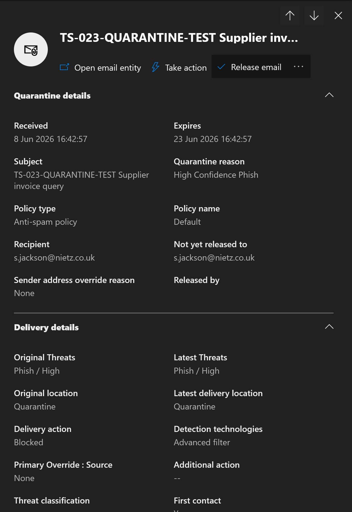
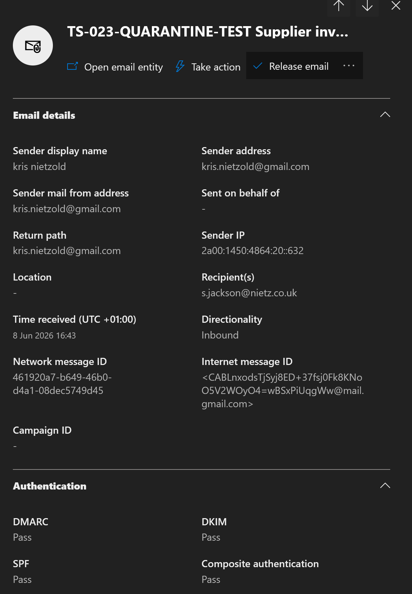
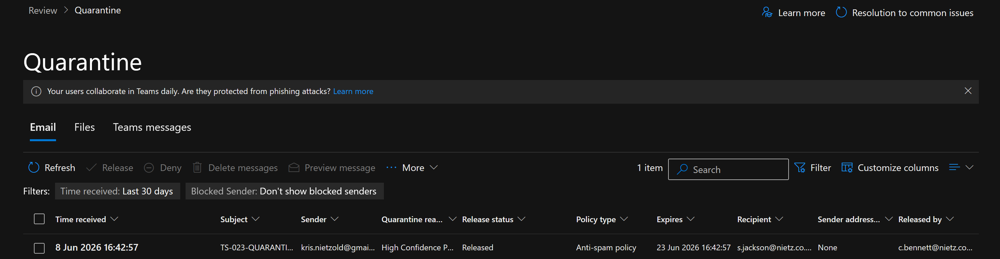
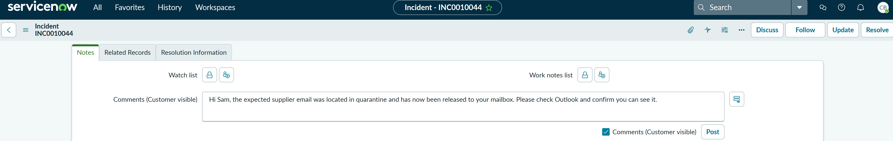
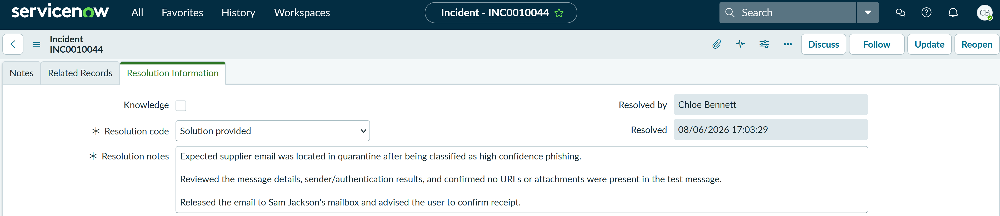
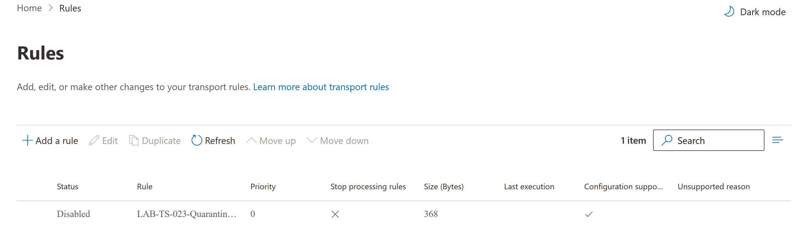

TS-023: Supplier email quarantined as phishing
Reviewed and released an expected supplier email that Microsoft 365 had quarantined as high-confidence phishing, completing sender-authentication and message-detail checks before delivery.
Scenario
Sam Jackson reported that an expected supplier email had not arrived in his mailbox. Because the missing message related to an external supplier and was suspected to have been filtered, I treated the ticket as a security and phishing review issue rather than a normal Outlook delivery fault.
ServiceNow Ticket
The incident was logged as a single-user security issue and assigned to the Service Desk. I set the category to Security, the subcategory to Phishing, impact to 3 - Low, urgency to 2 - Medium, and priority to 4 - Low.

Investigation
To safely generate a quarantined message in the lab without using real phishing content, I created a temporary Exchange Online mail flow rule. The rule matched a controlled test subject and set the spam confidence level to 9, causing the test supplier email to be handled by the anti-spam policy.

I then checked the Microsoft Defender quarantine queue. The expected test email was present in quarantine for s.jackson@nietz.co.uk, with the release status showing Needs review.

I opened the quarantined message details and reviewed the classification and delivery information. The message was classified as High Confidence Phish, blocked by the anti-spam policy, and remained in quarantine.

Before releasing the email, I reviewed sender and authentication details. The message showed inbound delivery from the external sender, with SPF, DKIM, DMARC and composite authentication passing. The lab message contained no URLs or attachments.

Fix Applied
After reviewing the message details and confirming the message was expected for the user, I released the quarantined email to Sam Jackson's mailbox.

Validation
I updated the user through the ServiceNow incident, advising that the expected supplier email had been released and asking the user to confirm it was visible in Outlook.

Resolution
The ticket was resolved with the resolution code Solution provided. The resolution notes summarised the quarantine finding, message review, authentication check, absence of URLs or attachments in the test message, release action and user update.

After completing the test, I disabled the temporary mail flow rule so future messages with the lab subject would not continue to be forced into quarantine.

Summary
- Resolved a P4 Low security incident for a single user missing an expected supplier email.
- I classified the ticket as Security > Phishing because the message was suspected to have been filtered as malicious.
- I used a controlled lab mail flow rule to safely generate a quarantined test message without sending real phishing content.
- I located the message in Microsoft Defender quarantine and confirmed it was marked as High Confidence Phish.
- I reviewed delivery details, sender information and authentication results before taking action.
- I confirmed the test message had no URLs or attachments before release.
- I released the quarantined email to Sam Jackson's mailbox and updated the user through ServiceNow.
- I resolved the ticket in ServiceNow using the code Solution provided.
- I disabled the temporary test rule after the lab to avoid future unintended quarantine actions.